3. CREATING OR MODIFYING AN RF MATRIX HARDWARE CONFIGURATION
4. ADD AND MODIFY USER INFORMATION
5. LABEL RF MATRIX INPUTS AND OUTPUTS
7. ASSIGN INPUTS TO USERS OR DELETE INPUTS FROM USERS
8. START/STOP MATRIX CONTROL PROCESS
1. INTRODUCTION
The RFMaze is a unified controller for any RF switch, RF attenuator and Optical switch matrices. It provides a single graphical user interface to control all vendors’ hardware. It also provides a single command line interface for automation.
This tool allows multiple users accessing the same matrix without conflict. The flexible and powerful handover control features make this tool superior to others, particularly in terms of MIMO.
This user guide is for the Admin portion of the tool. It uses Quintech QRB3000 hardware as an example for illustration.
2. INSTALLATION
The RFMaze software package is installed in a Linux PC. If the server software package is not already installed, follow the steps below for installation.
New Installation
- Download the tar ball package, typically named rfmaze_web_server.tar, from Acentury and put it under / directory.
- From an xterm on the Linux PC, run the follow commands
- cd /
- tar –xvf rfmaze_web_server.tar
- /opt/tomcat/bin/install_rfmaze_web_server.sh
Upgrade Installation
- Download the upgrade package, typically named rfmaze.war and put it in your windows PC.
- Browse http://[rfmaze_web_server_host_or_ip]/manager/ and scroll down to the row of “/rfmaze”, click “undeploy” to undeploy the existing version.
- From “WAR file to deploy pane, choose the rfmaze.war file from your PC, then select “deploy”.
- IMPORTANT: select “RESTART SERVER” from the RFMaze web interface.
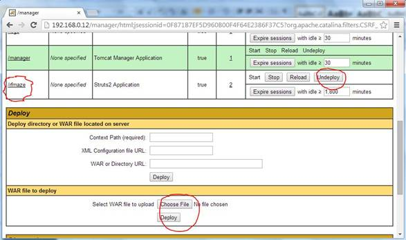
The server’s tomcat process will start automatically after installation and upon each reboot. The rest of steps are done from any web browser on any computer in the network.
3. CREATING OR MODIFYING AN RF MATRIX HARDWARE CONFIGURATION
From a web browser, enter http://[rfmaze_web_server_host_or_ip]/rfmaze/. In our example below, the server IP is 192.168.0.19.
- Login as admin, default password is admin123. The admin can change the default password later.
- Select “RF MATRIX CONFIGURATION”, the default
configuration for a Quintech QRB3000 will display as below:
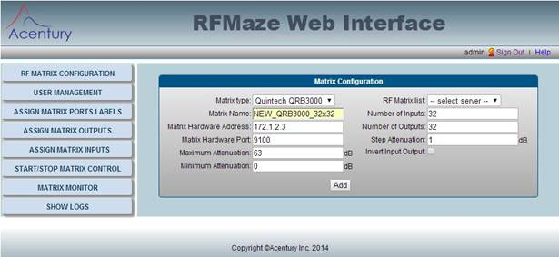
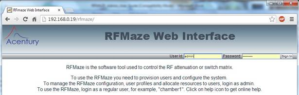
Create ANew Matrix
- To add a new RF Matrix hardware to be controled by the RFMaze tool, enter the “Matrix Name” and “Matrix Hardware IP Address”. For QRB3000, leave the rest as the default values. The “Matrix Hardware Address” is the IP address configured in the matrix hardware.
- Click “Add”, the “created successfully” message will be display.
- Enter a new “Matrix Name” to create the configuration for another hardware.
Modify or Delete An Exsiting Matrix
- NOTE: First, go to “START/STOP MATRIX CONTOL” menu, to stop the control process.
- To modify or delete an existing hardware configuration, select an existing matrix from the list in “RF Matrix List”.
- Change the field to be modified, typically, IP address or socket port.
- Click “Modify” to save the change.
- To delete an existing configuration, simply select it from “RF Matrix List”, then click “Delete”
4. ADD AND MODIFY USER INFORMATION
Users need to be added to the system before they have access to the matrix. In many companies, users are typically associated with RF chamber rooms. Therefore, we suggest using chamber room numbers as userid.
- Select “User Management” menu
- Click “Add New” to add a new userid and password
- Click “Edit” to change the information for an existing user
- Click “Delete” to delete an existing user
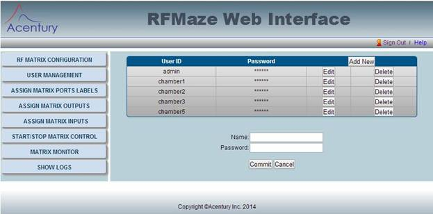
5. LABEL RF MATRIX INPUTS AND OUTPUTS
Labeling each input and output with some meaningful information is very helpful for users. Admin can change this information any time and users will be able to see it the next time they use the RFMaze.
- Select “ASSIGN MATRIX PORT LABELS” menu and “Select hardware” for your specific matrix.
- The default “Label” text will be visible on the input and output. This label is visible to each user. Click on the highlighted text and make your change. NOTE: Max 12 characters for “Label”
- The default “Description” text is also show below. This text can be very long and will be displayed only when the user moves the mouse over. Change the text on the highlighted area. Provide meaningful information to the users.
- The admin can “Export” the labels and then
“Download” to windows. The downloaded file can be edited with Excel and then
“Import” back.
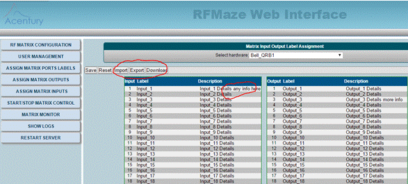
6. ASSIGN OUTPUTS TO USERS
NEW: for an active user, if the input and output assignment is changed, the user will receive a notice right away and he will acknowledge to refresh the change.
For a 32x32 matrix, it is usually too big to be used by one user or one RF chamber or RF cage. The best way to use it is to assign a few inputs and outputs to each user or each RF chamber/cage. When a user accesses it, only the inputs and outputs assigned will show up.
The easiest way to assign these resources is to assign the outputs to each RF chamber/cage first. Output/Chamber assignment is usually static. Input/BTS assignment is more dynamic.
- From the left side menu, select “ASSIGN MATRIX OUTPUTS”
- Now, select the userid/chamber from “Assign to User”
- Pick the RF Matrix from the list in “Select Hardware”
- Click on each Output (Label area) intended for the selected user. Double click to de-select.
- Click “Commit” to save the selection
- Repeat the above for another userid
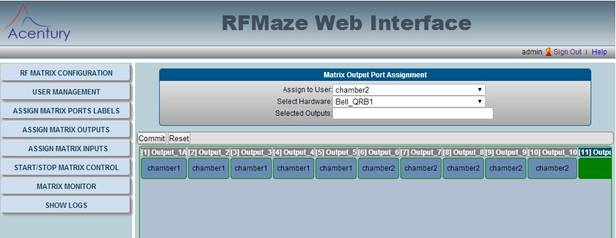
To delete the saved assignment or re-assign to a different user:
- Select the userid/chamber from “Assign to User”
- Pick the RF Matrix from the list in “Select Hardware”
- Click on an ASSIGNED Output (Label area), one at a time, to “Reassign” to another user or “Free” the
assignment. The example below shows output 10 is to be reassigned from chamber2
to chamber3
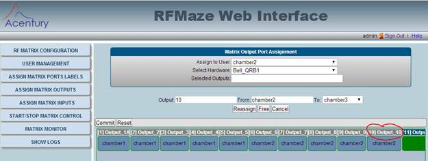
7. ASSIGN INPUTS TO USERS OR DELETE INPUTS FROM USERS
IMPORTANT: For a specific user, always assign output first!
NEW: for an active user, if the input and output assignment is changed, the user will receive a notice right away and he will acknowledge to refresh the change.
There is a few ways to assign an input to one or more users: assign a new input to one or more users at the same time; reassign an input from an existing user to another user; allow a user to share an input with one or more existing users.
- From the left side menu, select the “ASSIGN MATRIX INPUTS”
- Pick the RF Matrix from the list in “Select Hardware”
- Click on any one Input If the input is never assigned to any user, the “Assign To” dialogue box will appear as show below. Use shift or control key to select one or multiple users
- Click “Assign To” to commit the change
- Each display page shows 8 inputs at one time. Use the [prev] or [Next] button to go to different inputs/pages.
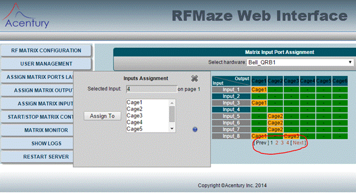
- If the input is already assigned to one or more user, the following dialogue box appears to allow “Reassign” from existing user to another user, “Share With” with another user, or “Free From” the existing user
- To delete or free an assignment, select the “Free From” action
- Repeat the above for another userid
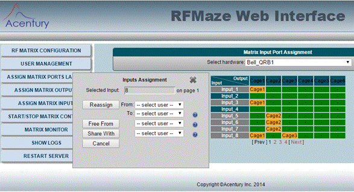
8. START/STOP MATRIX CONTROL PROCESS
Now all hardware configurations and user information are ready, it is time to start the control of the RF matrix so that users can use and share without conflict:
- From the left side menu, select “START/STOP MATRIX CONTROL”. All the RF Matrices will be displayed. “Status” shows whether the control process is running or stopped.
- Click under “Action” to start or stop the control.
- The only other two occasions that the process should be stopped and then re-started is: shutting down for matrix maintenance or matrix hardware configuration changed.
9. MONITOR MATRIX
The Admin can use the monitor feature to view the overall user output assignment, input and output label/description, attenuation and input power value. The admin can also change the attenuation from a certain input to output.
LIMITATION AND WORKAROUND: currently, the input users cannot be displayed in the “Matrix Monitor” window. This is because there may have multiple users for one input. To view the users on each input, please use the “ASSGIN MATRIX INPUTS” menu. Also, the labels move with the whole matrix view when scrolling. This will be enhanced in the next release.
Select “Monitor Matrix” from the left menu. The full view of the full matrix will be display as shown below:
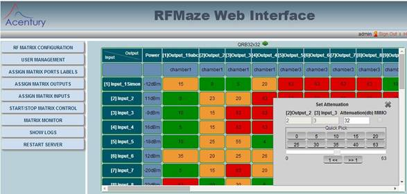
10. SHOW AND DOWNLOAD LOG
Should there be any issue with the matrix control. Download and check the content of the log file. The log files are name in the form of [matrix_name].cfg.log[n], where n=the current date. Therefore, the logs are overwritten once every month and there is no need for admin to clean the log storage.
The log content is readable and errors are easy to spot. For example “Connection Error”, “Response Failed”, etc.
Select “SHOW LOGS” from the left menu, the log files will be displayed as below. Click on the “Download” arrow to download the files for the specific dates. When requesting support, always inspect the log files and follow the “TROUBLESHOOTING TIPS” first.
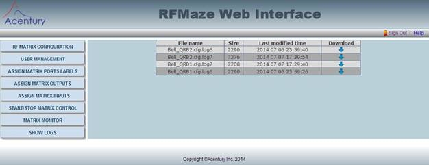
11. RESTART SERVER
Should it be necessary for the admin to restart the web interface, click the
newly added menu “RESTART SERVER”, as shown below:
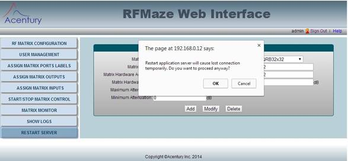
12. TROUBLESHOOTING TIPS
Web connection issue
- Should there be any difficulty connection to the web interface, follow the steps below to debug
- Make sure the lab network is up and running
- Make sure the web server Linux PC is pingable
- Make sure the tomcat web server process is running, by issue the linux command “ps –ef|grep java |grep rfmaze”. If the process is not running, run “/opt/tomcat/bin/startsh.sh”. Otherwise, reboot the server
User cannot change attenuation
- select menu “START/STOP MATRIX CONTROL”, make sure matrix control process are running
- Connect as a regular user, say, chamber1, and make sure the connection icon at top right corner is green, not orange, as
shown in the red circle in the chart below
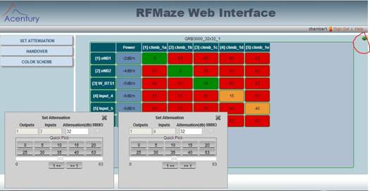
- Again reboot the server or restart tomcat process may rectify the issue
User Can Seem To Change Attenuation but no Effect on the RF
- Make sure the log file response message to the matrix hardware has no failure
- Make sure the matrix hardware is pingable
- The Quintech QRB3000 hardware may need reboot from time to time. Before reboot, make sure stop the control process from menu “START/STOP MATRIX CONTROL”. After reboot, make sure restart the control process again